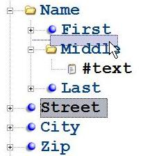

Drag/Drop Support#
You can drag and drop nodes from the tree view to rearrange them within the document or more them across documents using multiple instances of XML Notepad. (Note: You can easily create a new instance of XML Notepad by selecting the Window/New Window menu item). Additionally, you can drag an XML file from Windows Explorer onto XML Notepad as a quick way to open that file.
When you drag and drop nodes across programs, it uses the same text format as Cut/Copy/Paste.
As you drag the selected element, a shadow node will appear in the tree, moving with the cursor to indicate where the node will be placed. In the example below, the "Street" element is being dragged to a new location after the "First" element and before the "Middle" element:

When hovering the mouse over a collapsed node, automatically expands to facilitate dropping the node inside that collapsed container. Conversely, when hovering over an expanded node, it automatically collapses, aiding in finding nodes above or below that container.
By default, dragging is a move operation, even across XML Notepad instances, meaning if you drag a node from one XML Notepad instance to another, it will be removed from the first instance. If you wish to perform a copy operation instead, hold down the CONTROL key.
See Keyboard for more information.